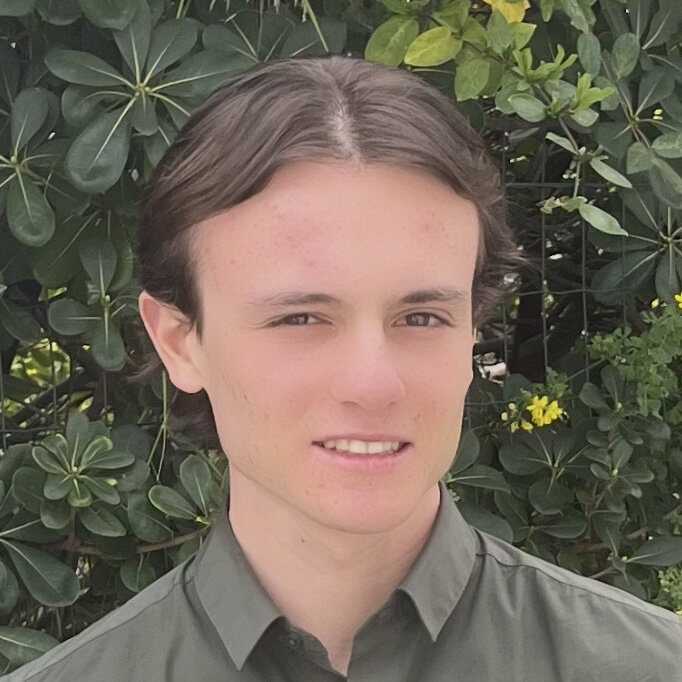

I am currently an engineering student at SeaTech Toulon after completing two years of preparatory classes (CPGE PC track) at Lycée Aux Lazaristes in Lyon.
Engineering Degree
Engineering school specializing in marine sciences and technologies.
Preparatory Classes for Grandes Écoles (CPGE) – PC Track
Advanced training in mathematics, physics, and chemistry. Research project (TIPE) on the optimization of materials for supercapacitors.
Early Preparation for CPGE
Anticipated preparation program for scientific preparatory classes.
High School Diploma – Highest Honors
Majors in Mathematics and Physics-Chemistry. European Section, Cambridge English Certification (B2).
Academic work, reports, research projects, and data analysis completed during my studies.
Report on the internship completed at the geotechnical engineering firm Géoterria.
View report →Design and development of a measurement system for coastal observation.
Numerical resolution of partial differential equations using the finite difference method, focusing on stability and accuracy analysis.
View project →Study and implementation of numerical methods to solve differential equations.
View project →Experimental study of partial wave reflection and determination of the Iribarren number based on slope and wave steepness.
View project →Data analysis of the HTM-NET network via harmonic decomposition and FFT to characterize tidal components in the Mediterranean.
View project →Study and control of Runge's phenomenon within the framework of polynomial interpolation.
View project →Comparison and implementation of methods for solving non-linear equations.
View project →Analysis of numerical quadrature methods and study of approximation errors.
View project →Entity-relationship modeling and SQL implementation applied to the railway network.
View project →Exploratory and statistical analysis of an EPC (DPE) dataset.
View Notebook →Optimal material selection using Granta software, integrating thermal, economic, and environmental constraints.
View project →Optimization of materials to maximize energy density (CPGE PC research work).
View project →Want to discuss a project, an internship opportunity, or just chat? Feel free to reach out to me.
You can contact me directly via email to discuss internship opportunities or projects.
Send an Email